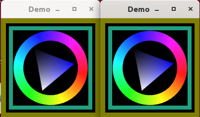

This demo runs two windows single-threaded with the help of UIApplication. As the windows run by default with VSYNC enabled, you can see that one window animation speeds up when the other window closes. That's because both windows are waiting for VSYNC to redraw, so each window only gets half the framerate.
Call two-windows vsync or two-windows softsync to see the difference.

This is a mulle-sde project. mulle-sde combines recursive package management with cross-platform builds via cmake:
| Action | Command | Description |
|---|---|---|
| Build | mulle-sde craft [--release|--debug] |
Builds into local kitchen folder |
| Install | mulle-sde install --prefix /usr/local https://github.com/<|GITHUB_USER|>/demo.git |
Like make install |
Install the requirements:
| Requirements | Description |
|---|---|
| some-requirement | Some requirement |
Install into /usr/local:
mkdir build 2> /dev/null
(
cd build ;
cmake -DCMAKE_INSTALL_PREFIX=/usr/local \
-DCMAKE_PREFIX_PATH=/usr/local \
-DCMAKE_BUILD_TYPE=Release .. ;
make install
)